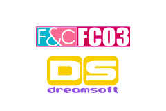

Natural 2 - Duo (Japan)
Stateless / Passcode 💾 MultiBoot
Cartridge Identity
- Game Code
AN2J(FamilyAN2)- Header Title
NATURAL2 DUO- Maker / Revision
CN/ rev0- ROM Size
- 8.0 MiB (8,388,608 B)
- Save Media
None / Unknown- SHA-256
3d1f5195dc795b7e50f5c7b98091860aac4b40249e9aa791ecef9d12e26c6e74
Screenshots

Link Cable & Multiplayer Communications
This title contains detected communication capabilities: 💾 MultiBoot.
Detailed protocol specifications, SIO registers, Joybus commands, and MultiBoot sequences are documented in the Link & Multiplayer Reference.
- Single-Cart MultiBoot
- Single-Cartridge MultiBoot (Download Play) client/server handler · Thumb SWI 0x25 (
0xDF25):0x245fb6,0x27ab06,0x27d1f4,0x288eb2
Cartridge Storage Architecture: Stateless / Passcode
Zero non-volatile battery hardware: This cartridge PCB contains ROM only (no SRAM, Flash, or EEPROM chips). Progression is preserved via on-screen passcodes or session-only gameplay. No
.sav file is generated or required.
Asset Map (formatkit.asset-map.v1)
Download AN2J-r0-3d1f5195dc795b7e.asset-map.json.gz (239,233 B (233.6 KiB)) Verified PASS · 64.81% coverage
| Metric | Bytes / Value | Entries |
|---|---|---|
| Identified | 4,031,959 B (3.85 MiB) (48.06%) | 2,035 |
| Mapped | 0 B (0.00%) | 0 |
| Opaque | 1,404,760 B (1.34 MiB) (16.75%) | 1 |
| Unknown | 2,951,889 B (2.82 MiB) (35.19%) | 1,862 |
| Total ROM Size | 8,388,608 B (8.00 MiB) | 3,898 |
| Coverage % | 64.81% | — |
| Entries w/ Code Refs | 2,159 / 3,898 (55.39%) | — |
Top Identified Formats: compress.bios-lz77 (668 · 3,859,719 B (3.68 MiB)) · gfx.gba-palette (1,365 · 170,880 B (166.9 KiB)) · audio.m4a-song-table (1 · 1,168 B (1.1 KiB)) · gba.rom-header (1 · 192 B)
Largest unknown Extents (Headerless / Custom Asset Candidates)
| Offset | Size | Shannon Entropy | Code Refs |
|---|---|---|---|
0x000AB2FC | 365,736 B (357.2 KiB) | 5.233 bits/B | 2 |
0x001CB714 | 216,164 B (211.1 KiB) | 6.255 bits/B | 0 |
0x001532B8 | 195,664 B (191.1 KiB) | 7.260 bits/B | 8 |
0x0055CAA4 | 164,508 B (160.7 KiB) | 5.335 bits/B | 0 |
0x00200398 | 142,476 B (139.1 KiB) | 6.751 bits/B | 0 |
gzip -dk AN2J-r0-3d1f5195dc795b7e.asset-map.json.gz && gbakit map verify rom.gba AN2J-r0-3d1f5195dc795b7e.asset-map.json
gbakit assets export rom.gba --asset-map AN2J-r0-3d1f5195dc795b7e.asset-map.json -o out/Text, Fonts & Scene Data
- Primary Text Encoding
- LZ77-compressed ASCII (
14ASCII strings ·200Shift-JIS runs ·5LZ77 ASCII blocks) - Font & VWF Indicators
- VWF Width Table 1bpp Font · BIOS SWIs: BitUnPack
0x10:12· LZ770x11/12:11· Huffman0x13:4· RLE0x14/15:9 - Scene & Packaging
48ROM pointer tables (≥32 entries,9≥200) ·14relativeu32TOCs ·307OAM metasprite hits